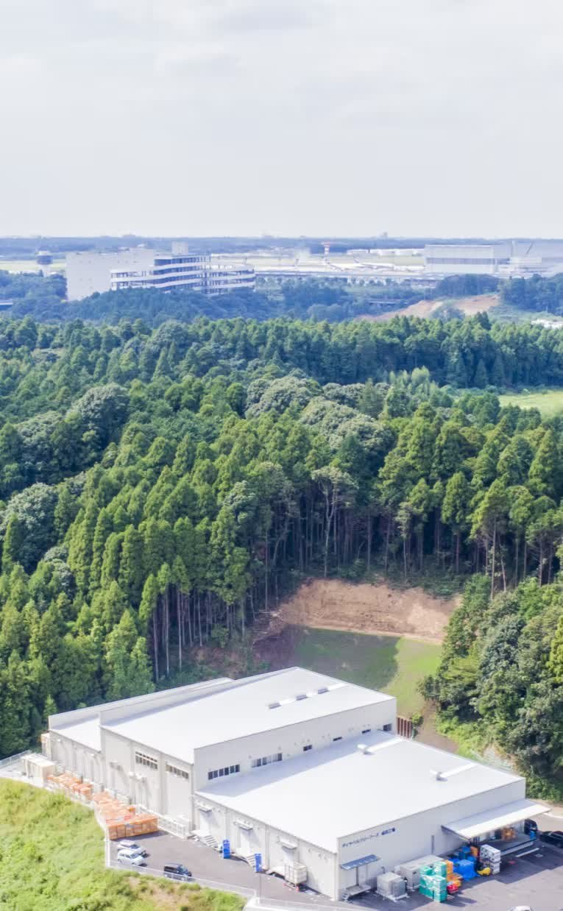
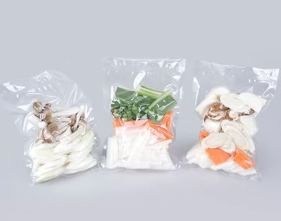

大手グループの基盤と、30年の製造実績

キャベツ・玉ねぎ・にんじん・レタスなど、毎日の食卓でおなじみの野菜を、全国の産地・栽培農家と提携して仕入れ、取引先の規格に合わせて加工しています。
住化農業資材（住友化学）グループの一員として安定した経営を続け、2017年には建物1,000坪・敷地2,500坪の新工場を建設。皆さんが作った商品は、お惣菜やサラダとして全国の食卓へ届いています。
住化農業資材（住友化学）グループの一員。食は景気に左右されにくく、30年にわたり安定して稼働してきました。社会保険完備・賞与年2回・昇給年1回（いずれも業績による）。
勤務は9:00〜18:00の日勤のみ。夜勤はありません。勤務地は芝山町の工場のみで転勤なし。地元で腰を据えて働けます。土日祝休みも部署で調整のうえ相談できます。
入社後は数ヶ月かけて各工程を実習し、適性を見て本配属。持ち場ごとに責任者がいるので、困ったときはすぐ相談できます。未経験から始めた社員が多数活躍中です。
2職種で正社員を募集しています

4つの作業ポジションから、あなたに合いそうな工程からスタート。ローテーションが少ないので1つの持ち場をじっくり習得できます。
工場の運営を支えるバックオフィス。取引先とのやり取りや経理処理など、会社の土台を担うポジションです。
勤務時間 9:00〜18:00（昼休憩1時間＋午後休憩30分）
※ここはサンプルです。実際には御社スタッフの1日の流れに差し替えます制服に着替え、衛生ルールに沿って手洗い・エアシャワーを済ませて工場へ。
その日の生産量と人員配置を確認。責任者から注意点を共有します。
全国から届いた野菜を検品し、ヘタ取り・皮むきなどの下処理へ。
休憩室でお昼。年齢を問わず会話が多い、にぎやかな時間です。
指定サイズに設定した機械でカット。計量して自動包装機でパック詰め。
一息ついてから、午後の後半へ。
注文書を確認しながら商品を仕分け、出荷の準備をします。
ラインの洗浄と明日の準備をして18:00に退勤。残業は少なめです。
実際に働く社員の声が入ることで、応募前の不安がぐっと下がります
※ここはサンプルです。実際に働く先輩からのメッセージ・写真に差し替えます最初は「工場って黙々と孤独なのかな」と思っていましたが、持ち場ごとに責任者がいて、分からないことはすぐ聞ける環境でした。今はカット工程を任されています。
パートから正社員になりました。細菌検査や帳票管理は未経験でしたが、資格取得支援を使って少しずつ覚えました。日勤のみなので家庭との両立もできています。
数ヶ月の実習で全部の工程を見てから配属が決まるので、自分に合う場所を見つけられました。休憩中はパートさんとも普通に雑談していて、年齢の壁は感じません。
大手グループの一員という安心感は大きいです。決められた仕事を正確に積み上げるのが好きな人には、とても向いている職場だと思います。
「自分に合うかどうか、まず話を聞いてみたい」という段階でも大歓迎です。工場見学も対応しますので、気軽にご連絡ください。
※ここはサンプルです。実際の採用担当者の写真・氏名に差し替えます（不要なら削除できます）| 職種 | カット野菜の製造及び品質管理スタッフ |
|---|---|
| 雇用形態 | 正社員 |
| 給与 | 月給240,000円〜260,000円（経験により優遇）※固定残業代25時間分37,000円〜40,000円を含む／超過分は別途支給 ※試用期間3か月は時給1,300円（固定残業代なし） |
| 勤務地 | 千葉県山武郡芝山町岩山350★転勤なし／芝山鉄道「芝山千代田駅」より車10分・公共バス利用可 |
| 勤務時間 | 9:00〜18:00（昼休憩1時間＋午後休憩30分） |
| 休日・休暇 | シフト制（月7〜8日）※希望考慮／部署で調整し、土日祝休みも相談OK／有給休暇あり |
| 資格・経験 | 未経験歓迎。通勤手段を確保できる方（車・バイク・自転車・徒歩） |
| 待遇・福利厚生 | 社会保険完備／昇給年1回・賞与年2回（業績による）／交通費規定内支給（上限月2万円）／資格取得支援制度／制服貸与（更衣手当あり）／更衣室・休憩室完備／車・バイク・自転車通勤可（駐車場完備）／育児休業・介護支援／健康診断／インフルエンザ予防接種 |
| パート・アルバイト | 同時募集・年齢不問。時給1,300円〜／9:00〜17:00（時短相談OK）／週3日〜 |
| 職種 | 事務経理スタッフ |
|---|---|
| 雇用形態 | 正社員 |
| 給与 | 御社確認後に反映※製造スタッフと同様の形式で記載予定 |
| 勤務地 | 千葉県山武郡芝山町岩山350（転勤なし） |
| 勤務時間 | 御社確認後に反映 |
| 休日・休暇 | 御社確認後に反映 |
| 資格・経験 | 御社確認後に反映※例：PC基本操作、経理・事務経験があれば優遇 など |
| 待遇・福利厚生 | 製造スタッフに準ずる（要確認） |
応募フォームから24時間受付。折り返しご連絡いたします。電話でのご応募も歓迎です。